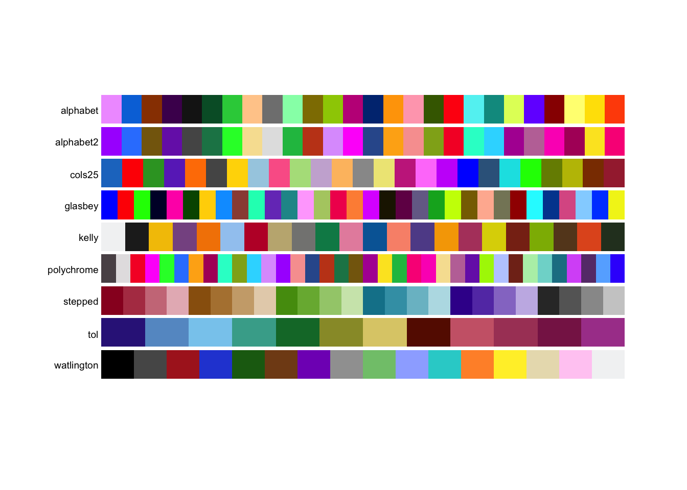
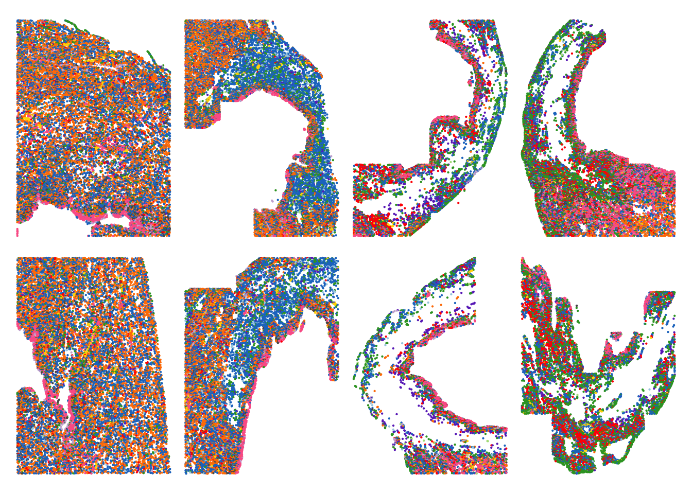
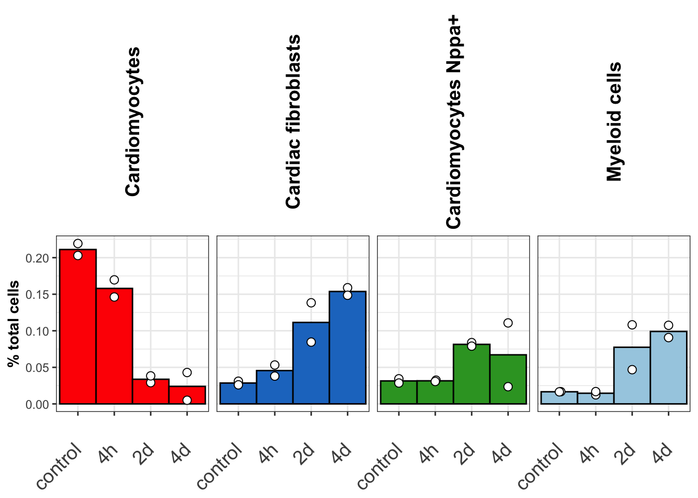
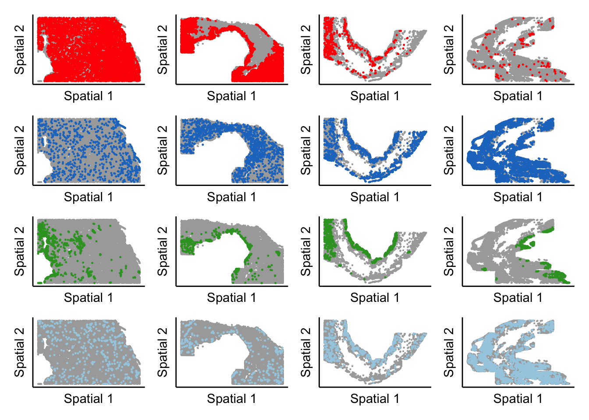
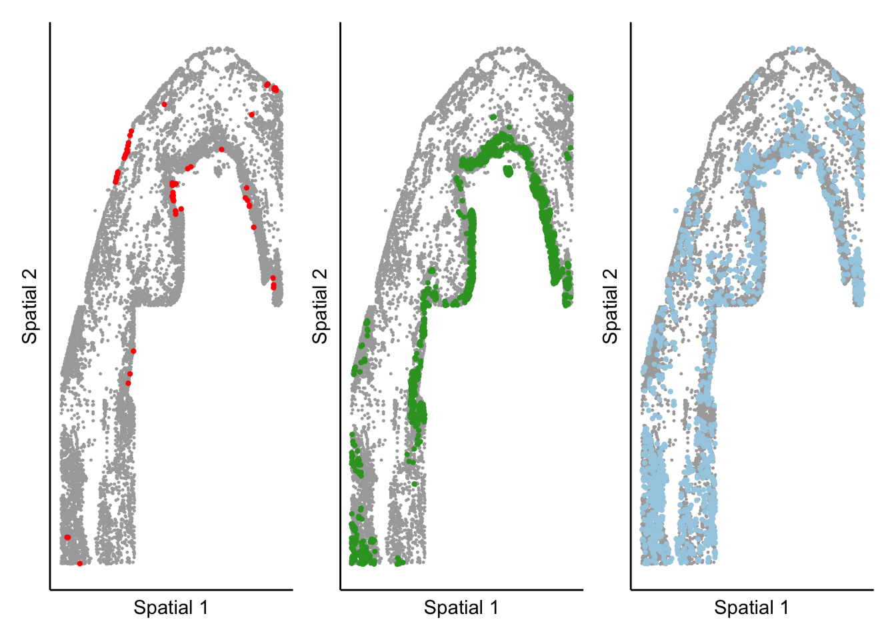

molkart.Figure1
FloWuenne
2023-08-11
Last updated: 2023-12-06
Checks: 7 0
Knit directory: mi_spatialomics/
This reproducible R Markdown analysis was created with workflowr (version 1.7.1). The Checks tab describes the reproducibility checks that were applied when the results were created. The Past versions tab lists the development history.
Great! Since the R Markdown file has been committed to the Git repository, you know the exact version of the code that produced these results.
Great job! The global environment was empty. Objects defined in the global environment can affect the analysis in your R Markdown file in unknown ways. For reproduciblity it’s best to always run the code in an empty environment.
The command set.seed(20230612) was run prior to running
the code in the R Markdown file. Setting a seed ensures that any results
that rely on randomness, e.g. subsampling or permutations, are
reproducible.
Great job! Recording the operating system, R version, and package versions is critical for reproducibility.
Nice! There were no cached chunks for this analysis, so you can be confident that you successfully produced the results during this run.
Great job! Using relative paths to the files within your workflowr project makes it easier to run your code on other machines.
Great! You are using Git for version control. Tracking code development and connecting the code version to the results is critical for reproducibility.
The results in this page were generated with repository version 2dcd178. See the Past versions tab to see a history of the changes made to the R Markdown and HTML files.
Note that you need to be careful to ensure that all relevant files for
the analysis have been committed to Git prior to generating the results
(you can use wflow_publish or
wflow_git_commit). workflowr only checks the R Markdown
file, but you know if there are other scripts or data files that it
depends on. Below is the status of the Git repository when the results
were generated:
Ignored files:
Ignored: .DS_Store
Ignored: .Rhistory
Ignored: .Rproj.user/
Ignored: analysis/.DS_Store
Ignored: analysis/.Rhistory
Ignored: analysis/deprecated/.DS_Store
Ignored: analysis/molecular_cartography_python/.DS_Store
Ignored: analysis/molecular_cartography_python/figures/
Ignored: analysis/seqIF_python/.DS_Store
Ignored: data/.DS_Store
Ignored: data/140623.calcagno_et_al.seurat_object.rds
Ignored: data/Calcagno2022_int_logNorm_annot.h5Seurat
Ignored: data/mol_cart.heart_regions/
Ignored: data/pixie.cell_table_size_normalized_cell_labels.csv
Ignored: data/results_cts_100.sqm
Ignored: data/seqIF_regions_annotations/
Ignored: data/seurat/
Ignored: figures/.DS_Store
Ignored: figures/Figure_5.pathway_plot.pdf
Ignored: figures/Figure_5.pca_plot.pdf
Ignored: figures/Figure_5.pca_plot.png
Ignored: figures/Figure_5.volcano_plot.pdf
Ignored: figures/Figure_5.vwf_expression_plot.pdf
Ignored: figures/Figure_5.vwf_specificity_plot.pdf
Ignored: figures/Supplementary_figure_3.segmentation_metrics.eps
Ignored: figures/Supplementary_figure_3.segmentation_metrics.png
Ignored: figures/figures.supplementary_figure4.png
Ignored: figures/mol_cart.Figure_2.gains.pdf
Ignored: figures/mol_cart.Figure_2.misty_gains.pdf
Ignored: figures/mol_cart.Myeloid_distribution.png
Ignored: figures/mol_cart.Nppa_distribution.eps
Ignored: figures/mol_cart.Nppa_distribution.pdf
Ignored: figures/mol_cart.Nppa_distribution.png
Ignored: figures/supplementary_figure4.cell_type_distributions.eps
Ignored: figures/supplementary_figure4.cell_type_distributions.png
Ignored: omnipathr-log/
Ignored: output/.DS_Store
Ignored: output/mol_cart.harmony_object.h5Seurat
Ignored: output/mol_cart/
Ignored: output/molkart_cell_types/
Ignored: output/proteomics/
Ignored: output/seqIF/
Ignored: plots/.DS_Store
Ignored: plots/Figure1.umap_plot.pdf
Ignored: plots/Figure3.ccr2_monomacro_regions.pdf
Ignored: plots/Figure3.cell_types_overtimes.pdf
Ignored: plots/Figure3.pixel_clusters_overtimes.pdf
Ignored: plots/mol_cart.Figure_2.ct_percentage.pdf
Ignored: plots/molkart.squidpy.co_occurrence_plot.CMs_Nppa.sample_2d_r1_s1.png
Ignored: plots/molkart.squidpy.co_occurrence_plot.CMs_Nppa.sample_2d_r2_s1.png
Ignored: plots/molkart.squidpy.co_occurrence_plot.CMs_Nppa.sample_control_r1_s1.png
Ignored: plots/molkart.squidpy.co_occurrence_plot.CMs_Nppa.sample_control_r2_s1.png
Ignored: plots/molkart.squidpy.co_occurrence_plot.Endocardial_cells.sample_2d_r1_s1.png
Ignored: plots/molkart.squidpy.co_occurrence_plot.Endocardial_cells.sample_2d_r2_s1.png
Ignored: plots/molkart.squidpy.co_occurrence_plot.Endocardial_cells.sample_control_r1_s1.png
Ignored: plots/molkart.squidpy.co_occurrence_plot.Endocardial_cells.sample_control_r2_s1.png
Ignored: plots/molkart.squidpy.co_occurrence_plot.Myeloid_cells.sample_2d_r1_s1.png
Ignored: plots/molkart.squidpy.co_occurrence_plot.Myeloid_cells.sample_2d_r2_s1.png
Ignored: plots/molkart.squidpy.co_occurrence_plot.Myeloid_cells.sample_control_r1_s1.png
Ignored: plots/molkart.squidpy.co_occurrence_plot.Myeloid_cells.sample_control_r2_s1.png
Ignored: plots/molkart.squidpy.nhood_enrichment_plot.sample_2d_r1_s1.png
Ignored: plots/molkart.squidpy.nhood_enrichment_plot.sample_2d_r2_s1.png
Ignored: plots/molkart.squidpy.nhood_enrichment_plot.sample_control_r1_s1.png
Ignored: plots/molkart.squidpy.nhood_enrichment_plot.sample_control_r2_s1.png
Ignored: references/.DS_Store
Ignored: renv/library/
Ignored: renv/staging/
Note that any generated files, e.g. HTML, png, CSS, etc., are not included in this status report because it is ok for generated content to have uncommitted changes.
These are the previous versions of the repository in which changes were
made to the R Markdown (analysis/figures.Figure1.Rmd) and
HTML (docs/figures.Figure1.html) files. If you’ve
configured a remote Git repository (see ?wflow_git_remote),
click on the hyperlinks in the table below to view the files as they
were in that past version.
| File | Version | Author | Date | Message |
|---|---|---|---|---|
| Rmd | 2dcd178 | FloWuenne | 2023-12-06 | wflow_publish("*") |
| html | 2dcd178 | FloWuenne | 2023-12-06 | wflow_publish("*") |
| Rmd | 5dee03d | FloWuenne | 2023-09-04 | Latest code update. |
Introduction
library(tidyverse)── Attaching core tidyverse packages ──────────────────────── tidyverse 2.0.0 ──
✔ dplyr 1.1.4 ✔ readr 2.1.4
✔ forcats 1.0.0 ✔ stringr 1.5.1
✔ ggplot2 3.4.4 ✔ tibble 3.2.1
✔ lubridate 1.9.3 ✔ tidyr 1.3.0
✔ purrr 1.0.2
── Conflicts ────────────────────────────────────────── tidyverse_conflicts() ──
✖ dplyr::filter() masks stats::filter()
✖ dplyr::lag() masks stats::lag()
ℹ Use the conflicted package (<http://conflicted.r-lib.org/>) to force all conflicts to become errorslibrary(cowplot)
Attaching package: 'cowplot'
The following object is masked from 'package:lubridate':
stamplibrary(Seurat)Loading required package: SeuratObject
Loading required package: sp
'SeuratObject' was built with package 'Matrix' 1.6.3 but the current
version is 1.6.4; it is recomended that you reinstall 'SeuratObject' as
the ABI for 'Matrix' may have changed
Attaching package: 'SeuratObject'
The following object is masked from 'package:base':
intersectlibrary(SCpubr)
── SCpubr 2.0.2 ────────────────────────────────────────────────────────────────
ℹ Have a look at extensive tutorials in SCpubr's book.
✔ If you use SCpubr in your research, please cite it accordingly.
★ If the package is useful to you, consider leaving a Star in the GitHub repository.
! Keep track of the package updates on Twitter (@Enblacar) or in the Official NEWS website.
♥ Happy plotting!
── Tips! ──
ℹ To remove the white and black end from continuous palettes, use: options("SCpubr.ColorPaletteEnds" = FALSE)
✖ To suppress this startup message, use: suppressPackageStartupMessages(library(SCpubr))
✖ Alternatively, you can also set the following option: options("SCpubr.verbose" = FALSE)
And then load the package normally (and faster) as: library(SCpubr)
────────────────────────────────────────────────────────────────────────────────library(pals)
library(patchwork)
Attaching package: 'patchwork'
The following object is masked from 'package:cowplot':
align_plotslibrary(ggbeeswarm)
source("./code/functions.R")here() starts at /Users/florian_wuennemann/1_Projects/MI_project/mi_spatialomics## If the object has already been computed
seurat_object <- readRDS(file = "./output/mol_cart/molkart.harmony_seurat_object.rds")## How many cells did we recover per sample?
cells_per_sample <- seurat_object@meta.data %>%
group_by(sample_ID) %>%
tally() %>%
ungroup()
mean(cells_per_sample$n)[1] 11878.75Umap plot
pal.bands(alphabet, alphabet2, cols25, glasbey, kelly, polychrome,
stepped, tol, watlington,
show.names=FALSE)Only 26 colors are available with 'alphabet'Only 26 colors are available with 'alphabet2'Only 25 colors are available with 'cols25'.Only 32 colors are available with 'glasbey'.Only 22 colors are available with 'kelly'.Only 36 colors are available with 'polychrome'.Only 24 colors are available with 'stepped'Only 12 colors are available with 'tol'Only 16 colors are available with 'watlington'.
| Version | Author | Date |
|---|---|---|
| 2dcd178 | FloWuenne | 2023-12-06 |
seurat_object@meta.data$anno_cell_type_lv2 <- gsub("_"," ",seurat_object@meta.data$anno_cell_type_lv2)
## Set color palette
arr <- list(x = -10, y = -15, x_len = 5, y_len = 5)
cell_types <- unique(seurat_object@meta.data$anno_cell_type_lv2)
colors <- cols25(n=length(cell_types))
named_colors <- colors
names(named_colors) <- cell_types
umap_plot <- SCpubr::do_DimPlot(sample = seurat_object,
label = TRUE, label.box = TRUE,
group.by = "anno_cell_type_lv2",
repel = TRUE,legend.position = "none", colors.use = named_colors, plot_cell_borders = TRUE,
plot_density_contour = FALSE, plot.axes = FALSE, raster.dpi = 300,
label.size = 6)
umap_plot
| Version | Author | Date |
|---|---|---|
| 2dcd178 | FloWuenne | 2023-12-06 |
save_plot(umap_plot,
file = "./plots/Figure1.umap_plot.pdf",
base_height = 6,
base_width = 8)Marker Dotplot
library(viridis)Loading required package: viridisLite
Attaching package: 'viridisLite'The following objects are masked from 'package:pals':
cividis, inferno, magma, plasma, turbo, viridis
Attaching package: 'viridis'The following objects are masked from 'package:pals':
cividis, inferno, magma, plasma, turbo, viridisgenes <- c("Ighm","Npr3","Acta2","Colec11","Fn1","Lyz2","Clu","Nppa","Dcn","Ryr2","Aqp1")
dotplot <- DotPlot(seurat_object, group.by = "anno_cell_type_lv2",
features = c("Ighm","Npr3","Acta2","Colec11","Fn1","Lyz2","Clu","Nppa","Dcn","Ryr2","Aqp1")) +
geom_point(aes(size=pct.exp), shape = 21, colour="black", stroke=0.5) +
scale_colour_viridis(option="magma", direction = -1) +
guides(size=guide_legend(override.aes=list(shape=21, colour="black", fill="white"))) +
theme(axis.title = element_blank(),
axis.text.x = element_text(size = 18, angle = 90, vjust = 0.5, hjust=1),
axis.text.y = element_text(size = 18),
legend.position = "top", legend.text = element_text(size = 18))Scale for colour is already present.
Adding another scale for colour, which will replace the existing scale.dotplot
| Version | Author | Date |
|---|---|---|
| 2dcd178 | FloWuenne | 2023-12-06 |
save_plot(dotplot,
file = "./plots/Figure1.dotplot.pdf",
base_height = 8,
base_width = 9)Additional plots for presentations
Spatial plot with all samples and cell types
cell_types <- unique(seurat_object@meta.data$anno_cell_type_lv2)
colors <- cols25(n=length(cell_types))
named_colors <- colors
names(named_colors) <- cell_types
meta <- seurat_object@meta.data
expression_plot_list <- list()
samples <- c("sample_control_r1_s1","sample_4h_r1_s1",
"sample_2d_r1_s1","sample_4d_r1_s1",
"sample_control_r2_s1","sample_4h_r2_s2",
"sample_2d_r2_s1","sample_4d_r2_s1")
for(this_sample in samples){
pt_size <- 0.1
cluster_of_int <- c(16,19)
sample_object <- subset(meta,sample_ID == this_sample)
highlight_plot <- ggplot(sample_object,aes(X_centroid,Y_centroid)) +
geom_point(aes(color = anno_cell_type_lv2),size = pt_size) +
theme_void() +
theme(axis.ticks = element_blank(),
axis.text = element_blank(),
legend.position = "none") +
scale_color_manual(values =named_colors)
expression_plot_list[[this_sample]] <- highlight_plot
}wrap_plots(expression_plot_list, nrow = 2, ncol = 4)
| Version | Author | Date |
|---|---|---|
| 2dcd178 | FloWuenne | 2023-12-06 |
Quantification of abundance changes for select cell types
metadata <- seurat_object@meta.data
cell_type_proportions_per_sample <- metadata %>%
group_by(anno_cell_type_lv2,timepoint,sample_ID) %>%
tally() %>%
ungroup() %>%
group_by(timepoint) %>%
mutate("ct_perc_time" = n / sum(n)) %>%
ungroup()
## Mean and points version
cell_type_proportions_per_sample$anno_cell_type_lv2 <- gsub("_"," ",cell_type_proportions_per_sample$anno_cell_type_lv2)
## Set order of cell types in plot from most abundant to least abundant
total_cells <- cell_type_proportions_per_sample %>%
group_by(anno_cell_type_lv2) %>%
summarise("total_cells" = sum(n)) %>%
arrange(desc(total_cells))
cell_type_proportions_per_sample$anno_cell_type_lv2 <- factor(cell_type_proportions_per_sample$anno_cell_type_lv2,
levels = total_cells$anno_cell_type_lv2)
## Set color palette for cell-types in molecular cartography data
arr <- list(x = -10, y = -15, x_len = 5, y_len = 5)
cell_types <- unique(unique(cell_type_proportions_per_sample$anno_cell_type_lv2))
colors <- cols25(n=length(cell_types))
named_colors <- colors
names(named_colors) <- cell_types
cell_types_oi <- c("Cardiomyocytes","Cardiac fibroblasts","Cardiomyocytes Nppa+","Myeloid cells")
cell_type_proportions_per_sample <- subset(cell_type_proportions_per_sample,
anno_cell_type_lv2 %in% cell_types_oi)
ct_time_barplot_v2 <- ggplot(cell_type_proportions_per_sample,aes(x = timepoint,y = ct_perc_time, fill = anno_cell_type_lv2)) +
stat_summary(
fun.y = mean,
geom = "bar",
width = 1,
color = "black") +
geom_beeswarm(size = 2.5, pch = 21, color = "black", fill= "white") +
facet_grid(. ~ anno_cell_type_lv2) +
theme_bw() +
theme(axis.title = element_text(face="bold")) +
theme(axis.text.x = element_text(size = 14,angle = 45, vjust = 0.5, hjust=1),
strip.text.x = element_text(size = 14, colour = "black", angle = 90, face = "bold"),
strip.background = element_blank(),
legend.position = "none") +
labs(x = "",
y = "% total cells") +
scale_fill_manual(values = named_colors)Warning: The `fun.y` argument of `stat_summary()` is deprecated as of ggplot2 3.3.0.
ℹ Please use the `fun` argument instead.
This warning is displayed once every 8 hours.
Call `lifecycle::last_lifecycle_warnings()` to see where this warning was
generated.ct_time_barplot_v2
| Version | Author | Date |
|---|---|---|
| 2dcd178 | FloWuenne | 2023-12-06 |
Spatial plot showing abundance change over time
samples <- c("sample_control_r1_s1","sample_4h_r1_s1",
"sample_2d_r2_s1","sample_4d_r2_s1")
expression_plot_list <- list()
time_plot_list <- list()
colors_used <- named_colors[cell_types_oi]
for(cluster_of_int in cell_types_oi){
print(cluster_of_int)
color_use <- colors_used[[cluster_of_int]]
for(this_sample in samples){
pt_size <- 0.1
sample_object <- subset(seurat_object,sample_ID == this_sample)
meta <- sample_object@meta.data
highlight_plot <- ggplot(meta,aes(Y_centroid,X_centroid)) +
geom_point(data = subset(meta,!seurat_clusters %in% cluster_of_int),color = "darkgrey", size = pt_size) +
geom_point(data = subset(meta,gsub("_"," ",anno_cell_type_lv2) == cluster_of_int),color = color_use, size = pt_size * 2) +
theme_classic() +
labs(x = "Spatial 1",
y = "Spatial 2") +
theme(axis.ticks = element_blank(),
axis.text = element_blank(),
legend.position = "right")
expression_plot_list[[this_sample]] <- highlight_plot
}
time_plot <- wrap_plots(expression_plot_list, nrow = 1, ncol = 4) + plot_layout(guides = 'collect') + plot_annotation(cluster_of_int,theme=theme(plot.title=element_text(hjust=0.5)))
time_plot_list[[cluster_of_int]] <- time_plot
}[1] "Cardiomyocytes"
[1] "Cardiac fibroblasts"
[1] "Cardiomyocytes Nppa+"
[1] "Myeloid cells"final_plot <- wrap_plots(time_plot_list, nrow = length(cell_types_oi), ncol = 1) + plot_layout(guides = 'collect')
final_plot
| Version | Author | Date |
|---|---|---|
| 2dcd178 | FloWuenne | 2023-12-06 |
Plot target cell types from one time point next to each other
samples <- c("sample_control_r1_s1","sample_2d_r1_s1")
expression_plot_list <- list()
time_plot_list <- list()
cell_types_oi <- c("Endocardial cell","Cardiomyocytes Nppa+","Myeloid cells")
colors_used <- named_colors[cell_types_oi]
for(cluster_of_int in cell_types_oi){
print(cluster_of_int)
color_use <- colors_used[[cluster_of_int]]
if(cluster_of_int == "Endocardial cell"){color_use <- "red"}
pt_size <- 0.2
sample_object <- subset(seurat_object,sample_ID == "sample_2d_r1_s1")
meta <- sample_object@meta.data
highlight_plot <- ggplot(meta,aes(Y_centroid,X_centroid)) +
geom_point(data = subset(meta,!seurat_clusters %in% cluster_of_int),color = "darkgrey", size = pt_size) +
geom_point(data = subset(meta,gsub("_"," ",anno_cell_type_lv2) == cluster_of_int),color = color_use, size = pt_size * 4) +
theme_classic() +
labs(x = "Spatial 1",
y = "Spatial 2") +
theme(axis.ticks = element_blank(),
axis.text = element_blank(),
legend.position = "right")
expression_plot_list[[cluster_of_int]] <- highlight_plot
}[1] "Endocardial cell"
[1] "Cardiomyocytes Nppa+"
[1] "Myeloid cells"cell_type_plot <- wrap_plots(expression_plot_list, nrow = 1, ncol = 3) + plot_layout(guides = 'collect')
cell_type_plot
| Version | Author | Date |
|---|---|---|
| 2dcd178 | FloWuenne | 2023-12-06 |
sessionInfo()R version 4.3.1 (2023-06-16)
Platform: aarch64-apple-darwin20 (64-bit)
Running under: macOS Sonoma 14.1.2
Matrix products: default
BLAS: /Library/Frameworks/R.framework/Versions/4.3-arm64/Resources/lib/libRblas.0.dylib
LAPACK: /Library/Frameworks/R.framework/Versions/4.3-arm64/Resources/lib/libRlapack.dylib; LAPACK version 3.11.0
locale:
[1] en_US.UTF-8/en_US.UTF-8/en_US.UTF-8/C/en_US.UTF-8/en_US.UTF-8
time zone: Europe/Berlin
tzcode source: internal
attached base packages:
[1] stats graphics grDevices datasets utils methods base
other attached packages:
[1] viridis_0.6.4 viridisLite_0.4.2 RColorBrewer_1.1-3 here_1.0.1
[5] ggsci_3.0.0 ggbeeswarm_0.7.2 patchwork_1.1.3 pals_1.8
[9] SCpubr_2.0.2 Seurat_5.0.1 SeuratObject_5.0.1 sp_2.1-2
[13] cowplot_1.1.1 lubridate_1.9.3 forcats_1.0.0 stringr_1.5.1
[17] dplyr_1.1.4 purrr_1.0.2 readr_2.1.4 tidyr_1.3.0
[21] tibble_3.2.1 ggplot2_3.4.4 tidyverse_2.0.0 workflowr_1.7.1
loaded via a namespace (and not attached):
[1] rstudioapi_0.15.0 jsonlite_1.8.8 magrittr_2.0.3
[4] spatstat.utils_3.0-4 farver_2.1.1 rmarkdown_2.25
[7] ragg_1.2.6 fs_1.6.3 vctrs_0.6.5
[10] ROCR_1.0-11 memoise_2.0.1 spatstat.explore_3.2-5
[13] htmltools_0.5.7 gridGraphics_0.5-1 sass_0.4.7
[16] sctransform_0.4.1 parallelly_1.36.0 KernSmooth_2.23-22
[19] bslib_0.6.1 htmlwidgets_1.6.3 ica_1.0-3
[22] plyr_1.8.9 plotly_4.10.3 zoo_1.8-12
[25] cachem_1.0.8 whisker_0.4.1 igraph_1.5.1
[28] mime_0.12 lifecycle_1.0.4 pkgconfig_2.0.3
[31] Matrix_1.6-4 R6_2.5.1 fastmap_1.1.1
[34] fitdistrplus_1.1-11 future_1.33.0 shiny_1.8.0
[37] digest_0.6.33 colorspace_2.1-0 ps_1.7.5
[40] rprojroot_2.0.4 tensor_1.5 RSpectra_0.16-1
[43] irlba_2.3.5.1 textshaping_0.3.7 labeling_0.4.3
[46] progressr_0.14.0 fansi_1.0.5 spatstat.sparse_3.0-3
[49] timechange_0.2.0 polyclip_1.10-6 httr_1.4.7
[52] abind_1.4-5 compiler_4.3.1 withr_2.5.2
[55] fastDummies_1.7.3 highr_0.10 maps_3.4.1.1
[58] MASS_7.3-60 tools_4.3.1 vipor_0.4.5
[61] lmtest_0.9-40 beeswarm_0.4.0 httpuv_1.6.12
[64] future.apply_1.11.0 goftest_1.2-3 glue_1.6.2
[67] callr_3.7.3 nlme_3.1-164 promises_1.2.1
[70] grid_4.3.1 Rtsne_0.16 getPass_0.2-2
[73] cluster_2.1.6 reshape2_1.4.4 generics_0.1.3
[76] gtable_0.3.4 spatstat.data_3.0-3 tzdb_0.4.0
[79] data.table_1.14.8 hms_1.1.3 utf8_1.2.4
[82] spatstat.geom_3.2-7 RcppAnnoy_0.0.21 ggrepel_0.9.4
[85] RANN_2.6.1 pillar_1.9.0 yulab.utils_0.1.0
[88] spam_2.10-0 RcppHNSW_0.5.0 later_1.3.1
[91] splines_4.3.1 lattice_0.22-5 deldir_2.0-2
[94] renv_1.0.3 survival_3.5-7 tidyselect_1.2.0
[97] miniUI_0.1.1.1 pbapply_1.7-2 knitr_1.45
[100] git2r_0.33.0 gridExtra_2.3 scattermore_1.2
[103] xfun_0.41 matrixStats_1.1.0 stringi_1.8.2
[106] lazyeval_0.2.2 yaml_2.3.7 evaluate_0.23
[109] codetools_0.2-19 BiocManager_1.30.22 ggplotify_0.1.2
[112] cli_3.6.1 uwot_0.1.16 systemfonts_1.0.5
[115] xtable_1.8-4 reticulate_1.34.0 munsell_0.5.0
[118] processx_3.8.2 jquerylib_0.1.4 dichromat_2.0-0.1
[121] Rcpp_1.0.11 spatstat.random_3.2-2 globals_0.16.2
[124] mapproj_1.2.11 png_0.1-8 parallel_4.3.1
[127] ellipsis_0.3.2 assertthat_0.2.1 dotCall64_1.1-1
[130] listenv_0.9.0 scales_1.3.0 ggridges_0.5.4
[133] crayon_1.5.2 leiden_0.4.3.1 rlang_1.1.2